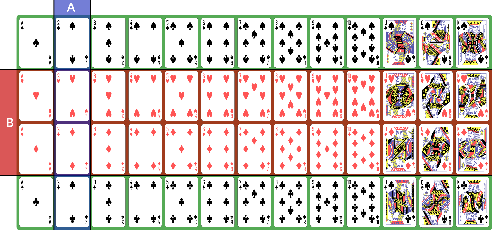
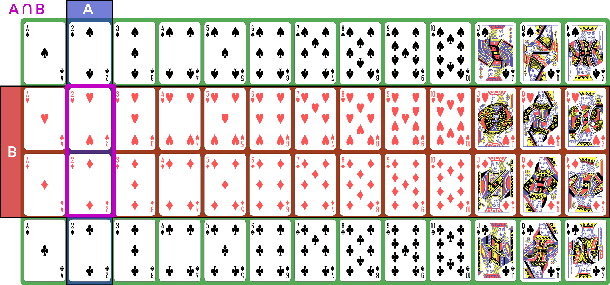
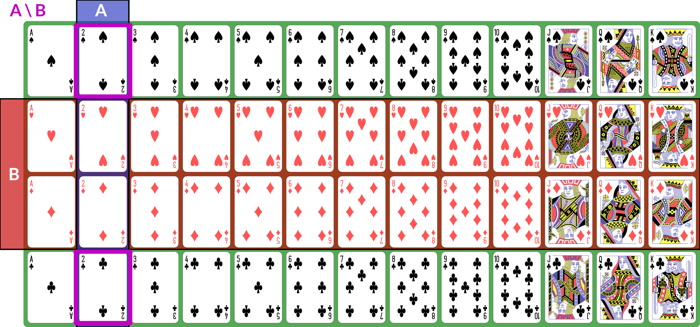

(probability=)
Notes on Probability¶
This document summarizes key concepts in probability theory. It is intended to be a concise reference for what we will be using, not a thorough tutorial exposition.
The concepts in this note are introduced in Week 4.
Set Concepts and Notation¶
A set \(A\) is an unordered collection of distinct elements.
\(\emptyset\) is the empty set.
\(A \cup B\) is the union: all elements in either \(A\) or \(B\) (or both).
\(A \cap B\) is the intersection: all elements in both \(A\) and \(B\).
\(A \setminus B\) is the set difference: all elements in \(A\) but not in \(B\).
If \(A\) is a subset of some larger set \(U\) that contains all the possible elements under consideration, then the complement \(A^c = U \setminus A\) is the set of elements not in \(A\).
\(|A|\) is the cardinality (or size) of \(A\). It may be infinite.
\(\mathcal{P}(A)\) is the power set of \(A\): the set of all subsets of \(A\).
Kinds of Sets¶
There are, broadly speaking, three kinds of sets in terms of their cardinality:
Finite sets have a finite number of elements. There is some natural number \(n\) such that \(|A| = n\).
Countable sets (or countably infinite sets) are infinite sets with the same cardinality as the set of natural numbers (\(|A| = |\mathbb{N}|\)). Formally, there exists an isomorphism (a 1:1 onto mapping) between members of \(A\) and \(\mathbb{N}\). Natural numbers, integers, rationals, and algebraics (rationals and roots) are all countable sets.
Uncountable sets are infinite sets whose cardinality is larger than that of the natural numbers. The real numbers (\(\mathbb{R}\)) and the power set of the natural numbers (\(\mathcal{P}(\mathbb{N})\)) are two frequently-encountered uncountable sets.
We also talk about discrete and continuous sets:
A continuous set \(A\) with an ordering \(<\) is a set where we can always find an element to fit between any two other elements: for any \(a, b \in A\) such that \(a < b\), there is a \(c \in A\) such that \(a < c < b\).
A discrete set is a set that is not continuous: there are irreducible gaps between elements.
All finite sets are discrete. The natural numbers and integers are also discrete. The real numbers are continuous. Rationals and algebraics are also continuous, but we won’t be using them directly in this class.
Note
While \(\mathbb{R}\) is continuous, the floating-point numbers are actually discrete and, technically, finite (there are only \(2^{64}\) possible values of a 64-bit quantity). However, we are usually using floats to represent reals, so for logical, mathematical purposes, we usually treat quantities represented in floats as continuous. The representation is an approximation of the true quantities.
Events¶
A random process (or a process modeled as random) produces distinct individual outcomes, called elementary events. We use \(E\) to denote the set of such outcomes; for a coin flip, \(E = \{H, T\}\). For a random process that produces a count, \(E = \mathbb{N}\).
Probability is defined over events. An event \(A\) is a subset of \(E\) (\(A \subseteq E\)). If elementary events are events, they are represented as singletons: \(A = \{H\}\) means “coin is heads”. \(E\), the set of all elementary events, is the event “something happened”.
We use set operations to combine events (for these examples, we consider \(E\) to be a deck of 52 standard playing cards; \(A\) is “2” and \(B\) is “red card”):
Illustration

\(A \cap B\) is the event “both \(A\) and \(B\) happened”; for our example, the conjunction is “red 2”, of which there are 2 (2♥, 2♦).
Illustration of \(A \cap B\)

\(A \cup B\) is the event “either \(A\) or \(B\) (or both) happened”; for our example, the disjunction is “2 or red” — any 2, or any red card; this set has size 28: the 26 red cards (13 of each red suit), plus the two black 2s.
Illustration of \(A \cup B\)

\(A \setminus B\) is the event “\(A\) happened but not \(B\)”. If \(B \subseteq A\), then \(A \setminus B = \emptyset\); for our example, the difference is “black 2”, because it is the set of 2s that are not red.
Illustration of \(A \setminus B\)

With these definitions, we can now define the event space: \(\Field\) is the set of all possible events (subsets of \(E\)). This is a set of sets. It does not necessarily contain every subset of \(E\), but it has the following properties:
\(E \in \Field\).
If \(A \in \Field\), then its complement \(A^c \in \Field\). We say \(\Field\) is closed under complement.
Since \(E \in \Field\) and \(E^c = \emptyset\), \(\emptyset \in \Field\).
If \(A_1, A_2, \dots, A_n \in \Field\), then their union \(\bigcup_i A_i \in \Field\). This applies also to unions of countably many sets. We say \(\Field\) is closed under countable unions.
\(\Field\) is called a sigma algebra (or sigma field). For a finite set \(E\), we usually use \(\Field = \mathcal{P}(E)\), the power set of \(E\). This means that every possible subset of \(E\) (and therefore every conceivable set of elementary events) is an event.
Here are some additional properties of sigma algebras (these are listed separately from the previous properties because those are the definition of a sigma algebra and these are consequences — we can prove them from the definitions and axioms):
If \(A, B \in \Field\), \(A \cap B \in \Field\)
Probability¶
Now that we have a sigma algebra, we can define the concept of probability. A probability distribution (or measure) \(\P\) over a sigma algebra \(\Field\) is a function that obeys the following (Kolmogorov’s axioms):
\(\P[E] = 1\) — the probability of something happening is 1.
\(\P[A] \ge 0\) — non-negativity: probabilities are not negative.
If \(A_1, A_2, \dots, A_n\) are (countably many) disjoint events in \(\Field\), then \(\P[\bigcup_i A_i] = \sum_i \P[A_i]\) (countable additivity).
A collection of disjoint sets is also called mutually exclusive. What it means is that for any \(A_i, A_j\) in the collection, \(A_i \cap A_j = \emptyset\) — the two events cannot both happen simultaneously.
We a field of events equipped with a probability measure \((E, \Field, \P)\) a probability space.
Some additional facts about probability:
\(\P[A] \le 1\) (combined with non-negativity, we have \(0 \le \P[A] \le 1\))
\(\P[A \cup B] = \P[A] + \P[B] - \P[A \cap B]\)
\(\P[A^c] = 1 - \P[A]\)
\(\P[A \setminus B] = \P[A] - \P[A \cap B]\)
If \(A \subseteq B\), then \(\P[A] \le \P[B]\)
Warning
We have to be careful with \(\P[A \cup B]\) — a common mistake is to attempt to compute it as \(\P[A] + \P[B]\). However, this erroneously counts elements in the intersection \(A \cap B\) twice. With the examples from before, where \(A\) is 2s and \(B\) is red cards, the red 2s are included in both \(\P[A]\) (since they are 2s) and \(\P[B]\) (since they are red). Subtracting the joint probability \(\P[A \cap B]\) corrects for the double-counting and produces the correct result. If \(A\) and \(B\) are disjoint (they can never happen at the same time), then \(\P[A \cap B] = 0\), and we can see that the probability follows the rules for countable additivity.
Joint and Conditional Probability¶
We define the joint probability \(\P[A, B] = \P[A \cap B]\): the probability of both \(A\) and \(B\) happening in the same observation. This is sometimes also written \(\P[A; B]\), and commas and semicolons are sometimes mixed. This is usually to separate different kinds of events in the probability statement.
The conditional probability \(\P[B|A]\), read “the probability of \(B\) given \(A\)”, is the probability of \(B\) conditioned on the knowledge that \(A\) has happened.
Conditional and joint probabilities decompose as follows:
\(\P[A,B] = \P[A|B] \P[B]\)
\(\P[A,B] = \P[B|A] \P[A]\)
From this we can derive Bayes’ theorem:
We can marginalize a joint distribution by summing. If \(\mathcal{B} = {B_1, B_2, \dots, B_n}\) is a collection of mutually exclusive events that span \(E\), then:
We call \(\mathcal{B}\) a partition of \(E\). By “span \(E\)”, we mean that for any \(e \in E\), there is some \(B_i \in \mathcal{B}\) such that \(e \in B_i\).
Independence¶
Two events are independent if knowing the outcome of one tells you nothing about the probability of the other. The following are true if and only if \(A\) and \(B\) are independent:
\(\P[A|B] = \P[A]\)
\(\P[B|A] = \P[B]\)
\(\P[A, B] = \P[A] \P[B]\)
Continuous Probability & Random Variables¶
If \(E\) is continuous (typically \(E = \mathbb{R}\)), then we can’t meaningfully talk about the probabilities of elementary events. The probability that an observation is exactly any particular value \(x \in \mathbb{R}\) is (typically) zero.
Instead, we define a sigma field where events are intervals:
\(E = \mathbb{R}\)
\(\Field\) is the set of intervals, their complements, and their countable unions. It contains infinitesimally small intervals, but not singletons.
This is not the only way to define probabilities over continuous event spaces, but it is the common way of defining probabilities over real values. This particular sigma-field is called the Borel sigma algebra, and we will denote it \((\mathbb{R}, \mathcal{B})\).
We often talk about continuous distributions as the distribution of a random variable \(X\). A random variable is a variable that takes on random values. We can (often) observe or sample a random variable.
We define continuous probabilities in terms of a distribution function \(F_X\):
This is also called the continuous distribution function (CDF).
We can use it to compute the probability for any interval:
This probability is called the probability mass on a particular interval.
Distributions are often defined by a probability density function \(p\) such that
Unlike probabilities or probability mass, densities can exceed 1.
When you use sns.distplot and it shows the kernel density estimator (KDE), it is showing you an estimate of the density.
That is why the \(y\) axis is weird.
We can also talk about joint and conditional continuous probabilities and densities. When marginalizing a continuous probability density, we replace the sum with an integral:
Note
Technically, a random variable for a probability space \((E, \mathcal{F}, P)\) is a function \(f_X: E \to \mathbb{R}\). For our purposes in this class, we can just treat random variables directly as the results of a probability space \((\mathbb{R}, \mathcal{B}, P)\).
Expectation¶
The expected value of a random variable \(X\), \(\E[X]\), is its mean. It is computed as the weighted sum over the possible values of \(x\), where the weight for each value is its probability (or density). For discrete \(X\) with probability measure \(P\), we have:
If \(X\) is continuous and has probability density \(p\), we have:
Note
If we use the technical definition of a random variable, then we denote:
We can also talk about the conditional expectation \(\E[X | A]\), the expected value of \(X\) given that we know event \(A\) happened. It is defined as \(\E[X|A] = \int x p(x|A) dx\).
Variance and Covariance¶
The variance of a random variable \(X\) is the expected value of its squared deviation from its mean:
The standard deviation is the square root of variance (\(\sigma_X = \sqrt{\Var(X)}\)).
The covariance of two random variables is the expected value of the product of their deviations from mean:
The correlation \(r_{XY} = \frac{\Cov(X, Y)}{\sigma_X \sigma_Y}\).
We can also show that \(\Var(X) = \Cov(X, X)\).
Random variables can also be described as independent in the same way as events: knowing one tells you nothing about the other. If two random variables are independent then their covariance \(\Cov(X, Y) = 0\) (this implication is one-directional — there exist non-independent random variables whose covariance is 0).
Properties of Expected Values¶
Expected value obeys a number of useful properties (\(X\) and \(Y\) are random variables, and \(\alpha\), \(\beta\), etc. are real numbers):
Linearity of expectation:
\(\E[X + Y] = \E[X] + \E[Y]\)
\(\E[\alpha X] = \alpha \E[X]\)
If \(X\) and \(Y\) are independent, then \(\E[XY] = \E[X] \E[Y]\)
If \(\E[X] = 0\), then \(\Var(X) = \E[X^2]\)
If \(\E[X] = \E[Y] = 0\), then \(\Cov(X, Y) = \E[X Y]\)
Expectation of Indicator Functions¶
Sets can be described as an indicator function (or characteristic function) \(\IND_A: E \to \{0,1\}\). This function is defined as:
Then the expected value of this function is the same as the probability of \(A\):
Odds¶
Another way of computing probability is to compute with odds: the ratio of probabilities for or against an event. This is given by:
The log odds are often computationally convenient, and are the basis of logistic regression:
The logit function converts probabilities to log-odds.
We can also compute an odds ratio of two outcomes:
Further Reading¶
If you want to dive more deeply into probability theory, Michael Betancourt’s case studies are rather mathematically dense but quite good:
Product Placement (probability over product spaces)
For a book:
Introduction to Probability by Grinstead and Snell
An Introduction to Probability and Simulation — a hands-on online book using Python simulations
A Probability Path by Sidney Resnick